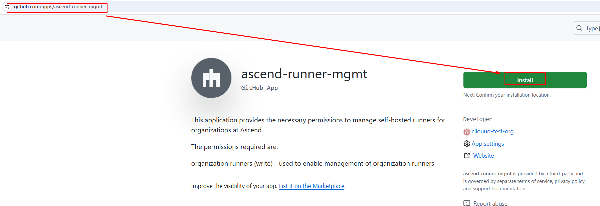
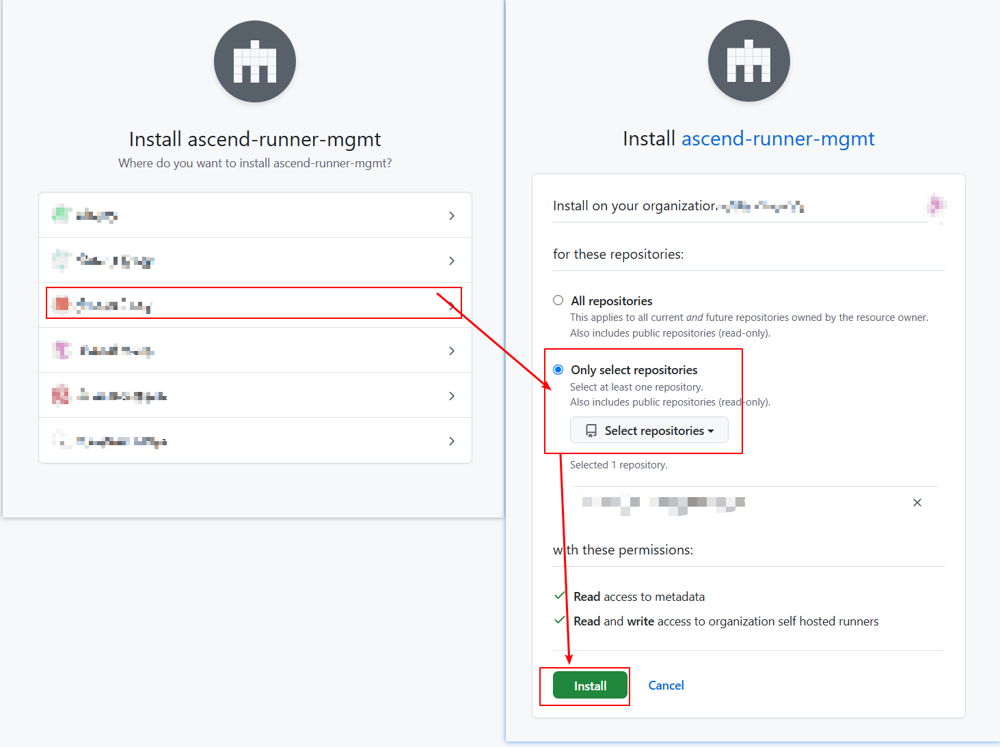
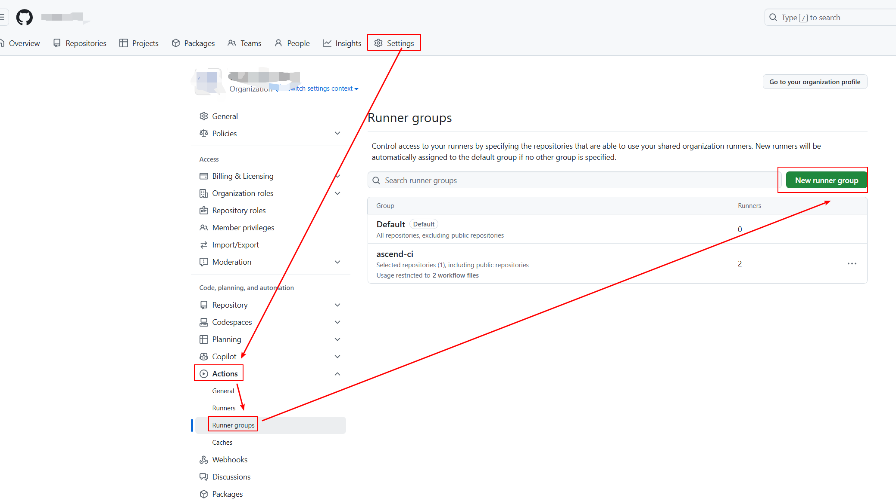
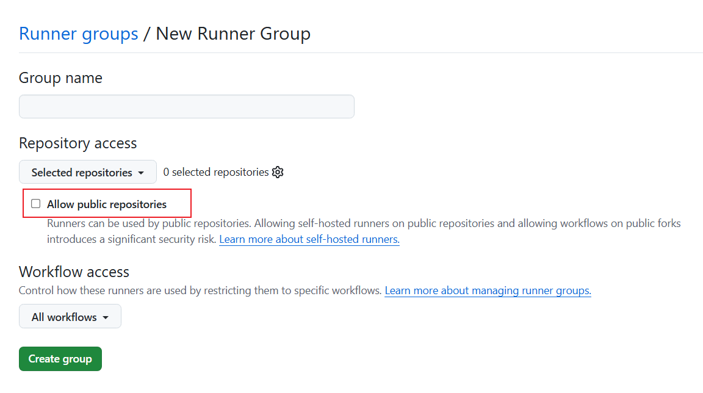
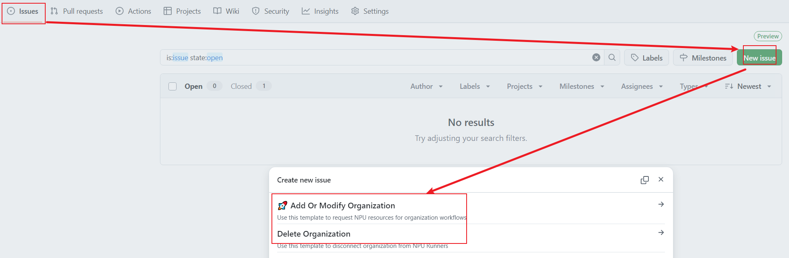
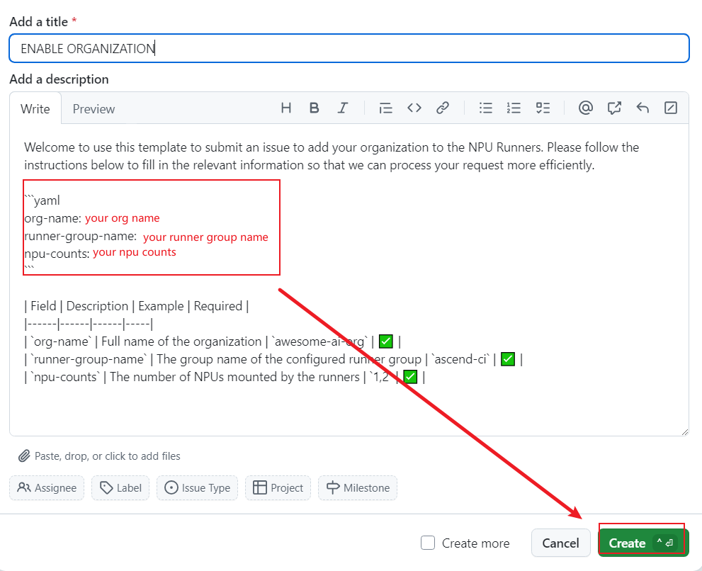
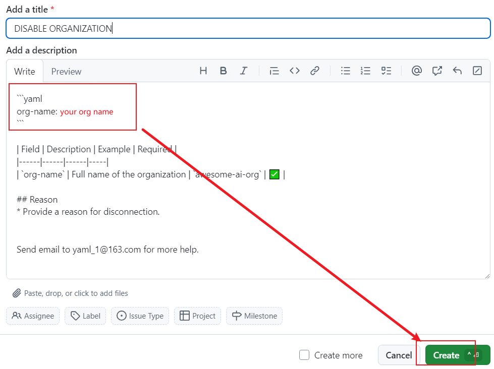
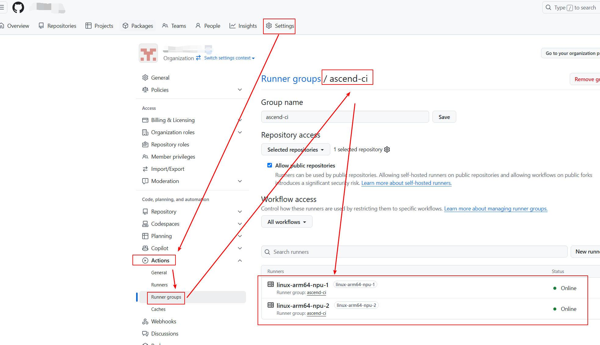

User Manual¶
This document provides two methods to integrate with NPU Runners.
GitHub App enables repositories within the same organization to integrate NPU Runners with one single configuration. However, installing the GitHub App requires permission of your organization administrators.
Personal Access Tokens (classic) allow users to configure individual repository without requiring approval from organization administrators.
Installing via GitHub App¶
Prerequisites¶
Require administrative permissions for the organization.
Install GitHub App¶
Visit apps/ascend-runner-mgmt in your browser and click Install.

Select the organization and repositories, then clickInstall.

Generate a Runner Group¶
Go to the Settings of organization → Actions → Runner groups → New runner group.

Configure repositories and workflows in the creation page. Note the Group name, you will use it later.
To allow public repositories to access ·NPU Runners·, enable Allow public repositories.

Submit a Request for enable App¶
Visit https://github.com/ascend-gha-runners/org-archive/issues and click New issue to select a template.
Add Or Modify Organization: Create or update organization configurations.Delete Organization: Remove an organization.

Add Or Modify Organizaiton¶
Fill in the parameters and click Create.
org-name：Full name of the organization.
runner-group-name: The name of runner group。
npu-counts: The number of NPUs mounted by the runners。

Delete Organization¶
Fill in the parameters and click Create.
org-name：Full name of the organization.

Installing via Personal Access Tokens (Classic)¶
Prerequisites¶
You must have repository access permissions.
Both `public and private repositories can be accessed to NPU Runners via PAT.
Generate a Token¶
Navigate to your personal account:
Settings → Developer settings → Personal access tokens → Tokens (classic) → Generate new token → Generate new token (classic).
Fill in a token name, select an expiration period.
Under permissions, enable the repo scope.
Click Generate token to create the token.

Submit a Request to Activate the Application¶
To ensure token confidentiality, send an email to gouzhonglin@huawei.com with the following details:
Email Subject:
Request Ascend NPU Runners
Email Body Template:
repo: my-org/my-repo
token: ghp_xxx
expire-at: 30days
Usage¶
NPU Runners names¶
NPU Runners names consist of the following components:
linux-amd64-npu-x
^ ^ ^ ^
| | | |
| | | Number of NPUs Available
| | NPU Designator
| Architecture
Operating System
Check NPU Runners Availability¶
View via Configuration File¶
We maintain the latest configuration of all organizations connected to NPU Runners in the https://github.com/ascend-gha-runners/org-archive/tree/main/org-archive/ directory. View your organization’s configuration in <your-org>.yaml, where the online-runners field displays the available NPU Runners.
View via Runner Groups¶
Navigate to the Settings of organization → Actions → Runner groups. Configured NPU Runners (e.g., linux-arm64-npu-1, linux-arm64-npu-2) will be visible under your runner group.

Use NPU Runners in Workflows¶
NPU jobs must run in a container (e.g., ascendai/cann:latest). If no container is specified, the job will not utilize NPU resources.
The following example shows how a GitHub Action workflow uses NPU Runners.
name: Test NPU Runner
on:
workflow_dispatch:
jobs:
job_0:
runs-on: linux-arm64-npu-1
container:
image: ascendai/cann:latest
steps:
- name: Show NPU info
run: |
npu-smi info
If you have any questions, please file a discussion.